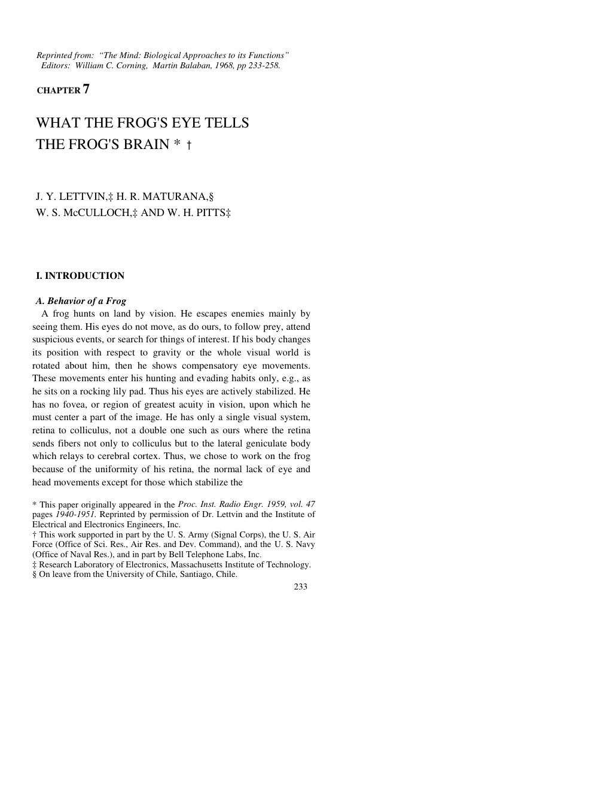
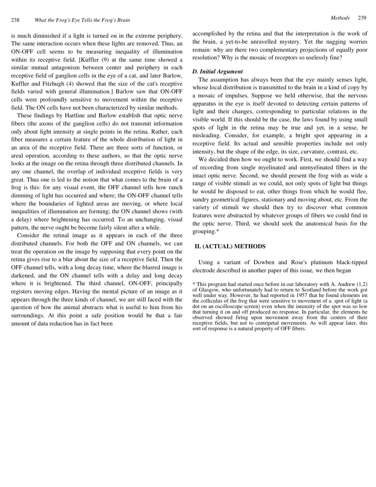
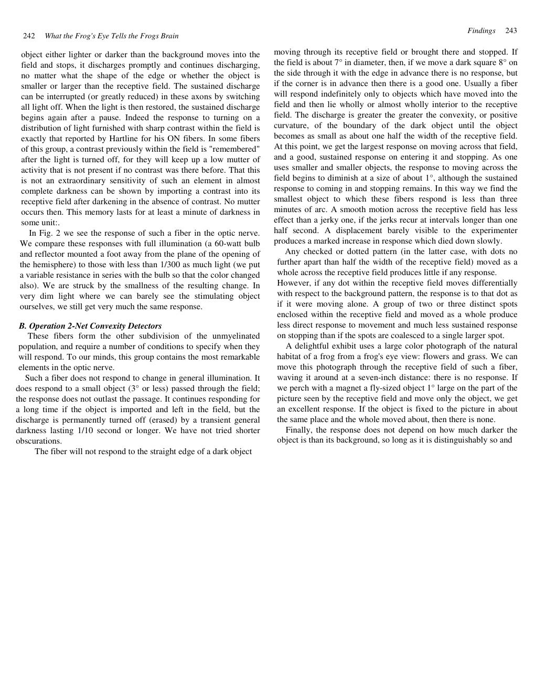
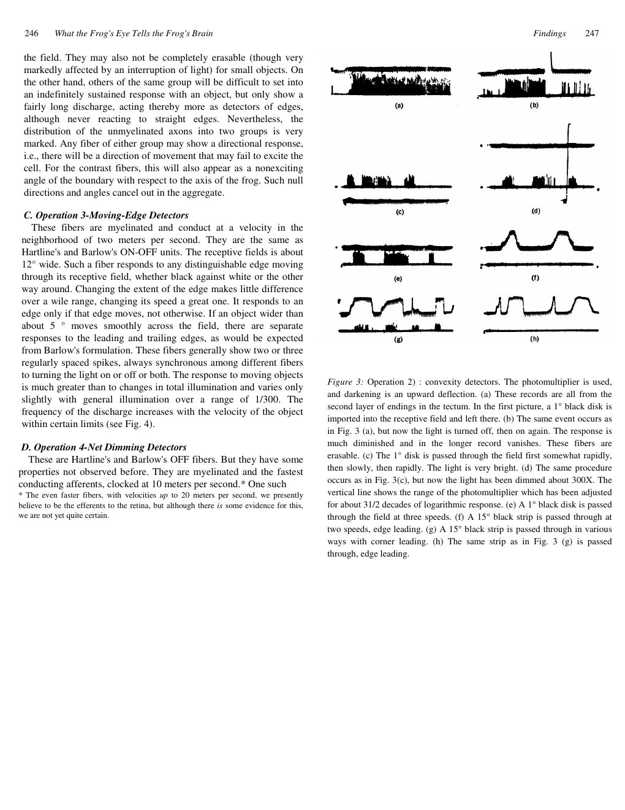
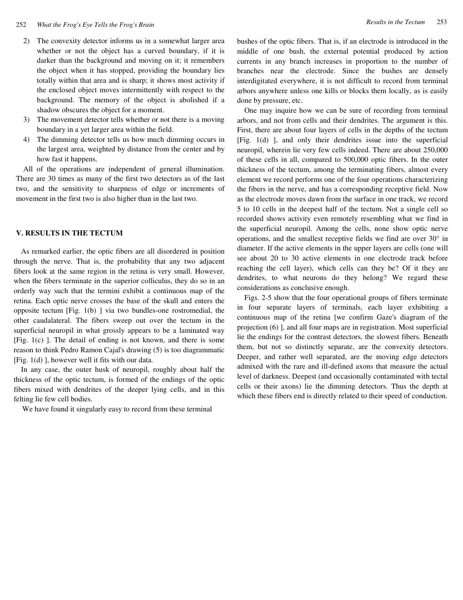

Sustained contrast
An unmyelinated fiber fires when a sharp edge, lighter or darker, moves into its field and stops. It keeps firing while the contrast remains; darkness interrupts it. It is a detector of a standing edge.
Proceedings of the IRE · Vol. 47 · 1959
The frog does not see a picture. Its retina performs four operations on the image — contrast, convexity, moving edges, dimming — and sends the results along four kinds of fiber to four maps in the tectum. The eye speaks a language already highly organised.
Read the plateThe thesis
The frog hunts by vision, but it is not interested in the detail of stationary things. It will starve surrounded by food if the food does not move. Its choice is determined by size and movement. The eye has no fovea, no searching movements, and a single visual path from retina to colliculus — a clean preparation for asking what the eye actually sends.
The answer is four operations, each carried by a distinct group of fibers and mapped continuously onto a sheet in the tectum: sustained contrast detection, net convexity detection, moving-edge detection, and net dimming detection. The first two use unmyelinated fibers; the last two myelinated. The maps are in registration.
Laboratory · the frog's eye
Drag the bug across the receptive field, or let it move on its own. Each row on the right is a fiber group; each mark is an impulse. Turn a detector off and watch a whole way of seeing disappear. The convexity detector is the one the authors were tempted to call a “bug perceiver.”
The field is the frog's visual world. The dashed circle is the receptive field of the recorded fiber. The rasters scroll with time; a mark is a spike.
The four operations
An unmyelinated fiber fires when a sharp edge, lighter or darker, moves into its field and stops. It keeps firing while the contrast remains; darkness interrupts it. It is a detector of a standing edge.
It responds to a small dark object with a convex boundary, best when the object enters and stops. It is not fooled by a moving background. “Bug perceiver” is the authors' own tempting name.
A myelinated fiber reports the movement of an edge, not its position. A smooth motion is less effective than a jerky one. It measures change, not standing contrast.
A myelinated fiber reports a rapid general darkening — the shadow of a predator, a cloud, a hand. It is the alarm channel, tuned to a change in the whole field.
The language
Each operation maps the retina continuously onto a sheet of endings in the frog's brain. The four sheets are in registration, so a tectal cell that reaches through all four sees one point in the image in four contexts at once. The image has been transformed from a space of points to a space of qualities.
This is why the authors say the operations have “much more the flavor of perception than of sensation.” The character of the contexts is genetically built in — a physiological synthetic a priori. The eye is not neutral. It arrives with a theory of what matters.
The output. A set of four distributed operations, independent of the general illumination, each carried by a distinct fiber group and mapped continuously onto the tectum.
The transformation. Every point is seen in definite contexts. The “figure” is no longer a pixel value but a signature of local operations.
The voice
“The frog does not seem to see or, at any rate, is not concerned with the detail of stationary parts of the world around him. He will starve to death surrounded by food if it is not moving.”
“There are four separate operations on the image in the frog's eye. Each has its result transmitted by a particular group of fibers.”
“The operations thus have much more the flavor of perception than of sensation, if that distinction has any meaning now.”
“We have been tempted, for example, to call the convexity detectors ‘bug perceivers.’”
“The character of these contexts, genetically built in, is the physiological synthetic a priori.”
The paper itself
click to enlarge





Why it matters
This paper gave vision science its central question: not “what is in the image?” but “what operations does the nervous system perform on the image?” The answer — contrast, convexity, movement, dimming — is a short, testable list, and it set the pattern for Hubel and Wiesel, for convolutional networks, and for every claim that perception begins with features rather than pixels.
It is also a philosophical result. The eye is not a neutral window. It is a theory of the world, genetically built in, expressed as a set of operations. What the frog sees is what its retina has already decided to ask about.